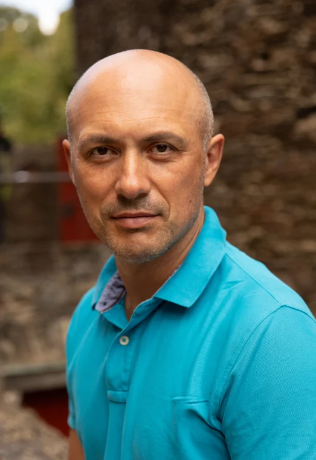

Senior Economist · Professor · Kyiv School of Economics
Oleh Nivievskyi
I’m an applied economist studying how markets respond to policy and disruption. I use that evidence to inform reforms that support economic growth and improve people’s well-being.

About
With over 20 years of experience in applied research and policy work across Europe, Central Asia, and Africa, my work covers agri-food and transport markets, trade and economic integration, fiscal decentralization and public finance, the economics of conflict and post-war recovery. I have worked with the World Bank, IFC, EU institutions, and USAID.
I have built research teams, led multidisciplinary projects, and advised governments and international organizations on reforms informed by economic analysis. I founded the Center for Food and Land Use Research and served as dean of its economics programs at the Kyiv School of Economics. I co-organized the 155th EAAE Seminar in 2016, the first EAAE seminar held in the post-Soviet region. I contributed to developing and advocating reforms in Ukraine with estimated total benefits of over USD 11 billion, including simplifying grain logistics procedures and export certification, reforming port tariffs, launching the agricultural land market, and reforming agricultural taxation.
I hold a PhD in Agricultural Policy and Applied Statistics from the University of Göttingen, an MA in Economics from the National University of Kyiv-Mohyla Academy, and an MSc in Physics and Computer Science from Kamianets-Podilskyi National University.
Geographic Experience
Research and advisory work covering the following regions and countries.
- Europe
- Ukraine, Germany, Belarus, Russia
Agricultural policy, land institutions, trade, and economic integration. - Central Asia
- Kazakhstan, Kyrgyz Republic
Agricultural support and the agribusiness environment. - Africa
- Uganda, Tanzania, Djibouti, Nigeria, Ghana
Agricultural productivity, food security, and value chains. - Middle East
- Yemen
Agri-food value chains and food security.
Selected experience
- Kyiv School of Economics. Faculty member since 2017 and full professor since 2025.
- Freie Universität Berlin. Visiting professor and von Siemens Foundation fellow, 2024–2026.
- European University Viadrina. Visiting professor and DAAD fellow, 2025–2026.
- World Bank and IFC. Economic policy adviser, 2012–2018.
- University of Göttingen. Visiting Scholar, 2022–2023. Research Associate / Postdoctoral Researcher, 2007–2010.
- Institute for Economic Research and Policy Consulting (IER). Research Associate, 2003–2007; Senior Research Associate, 2010–2016.